Guía paso a paso — Taller U2 (AA2): scripts automatizados del módulo completo
| Campo | Valor |
|---|---|
| Actividad | AA2 — Taller grupal: scripts automatizados funcionales |
| Integrante | Jhon Alexis Moreno |
| Roles asumidos | Líder/integrador · Responsable de API · Responsable de interfaz · Responsable de evidencias y documentación |
| Módulo | Mini aplicación "Inscripciones CETO" (Opción A) |
| Foco asignado | 1. Ciclo de vida del registro: crear (web y API) → consultar → listar → eliminar → verificar que ya no existe |
| Suite | 37 pruebas automatizadas: 20 API · 11 interfaz · 6 flujos E2E |
| Herramientas | Python 3.15.2 · pytest 9.2.0 · requests 2.34.2 · Selenium 4.52.0 · pytest-html 4.2.0 · Flask 3.1.3 · Git 2.56.1 · Chrome (headless) |
| Fecha | 10 de noviembre de 2026 |
1. Portada: equipo, roles y foco
El trabajo se organizó con los cuatro roles del Paso 1 del documento. Por condiciones del curso el equipo funcionó como integrante único, asumiendo todas las responsabilidades (el documento permite que en equipos pequeños el líder asuma además la documentación); los responsables de la matriz de casos reflejan el rol bajo el cual se escribió cada prueba, no a personas distintas.
| Rol | Responsabilidad principal | Quién lo asumió |
|---|---|---|
| Líder / integrador | Repositorio, plan de pruebas, integración del código, pipeline | Jhon Moreno |
| Responsable de API | Pruebas de la API REST (requests) | Jhon Moreno |
| Responsable de interfaz | Page Objects y pruebas Selenium | Jhon Moreno |
| Responsable de evidencias y documentación | Capturas, reporte, guía paso a paso, reflexión | Jhon Moreno |
Foco 1 — Ciclo de vida del registro. Todo el módulo se probó desde esa óptica: un estudiante se crea por el formulario o por la API, se consulta por id, aparece en los listados (web y API), se elimina y, después de borrarse, ya no existe en ninguna capa y su correo vuelve a estar libre.
2. Módulo bajo prueba y herramientas
2.1 La aplicación
Sistema Flask con datos en memoria (se pierden al reiniciar, ideal para pruebas):
| Capa | Ruta | Qué hace |
|---|---|---|
| API REST | GET/POST /api/estudiantes |
Lista (con ?programa=) y crea estudiantes en JSON |
| API REST | GET/DELETE /api/estudiantes/<id> |
Consulta y elimina por id |
| Formulario | /inscripcion (GET/POST) |
Inscripción web; muestra mensaje EST-XXXX o errores por campo |
| Listado | /estudiantes |
Tabla con código, nombre, correo, programa, semestre y contador #total |
Reglas de negocio (contrato): nombre ≥ 3 caracteres · correo válido y único · programa en la lista permitida · semestre entre 1 y 10. El POST del formulario tiene 0,5 s de latencia simulada, lo que obliga a esperas explícitas.
Códigos: 201 creación · 400 cuerpo no JSON · 409 correo duplicado ·
422 datos inválidos · 204 borrado · 404 no encontrado.
2.2 Estructura del repositorio y reparto
tests/conftest.py ← fixtures compartidas (NO se modifica sin avisar)
tests/test_api_estudiantes.py ← responsable de API (20 pruebas, marca `api`)
tests/test_formulario_inscripcion.py ← responsable de interfaz (11 pruebas, marca `ui`)
tests/test_flujo_e2e.py ← entre todos (6 flujos, marcas `ui` + `e2e`)
pages/inscripcion_page.py ← Page Object del formulario (marca `ui`)
pages/listado_page.py ← Page Object del listado (marca `ui`)
data/casos_formulario.csv ← datos de prueba parametrizados
app/ ← aplicación bajo prueba (no se modifica en pruebas)
.github/workflows/pruebas.yml ← pipeline de CI (líder)
capturas/ · evidencias/ · reportes/ ← evidencias
GUIA_AA2.md · GUIA_AA2.html ← esta guía
Marcos registrados en pytest.ini (api, ui, e2e), tal como exige el Paso 5.
3. Plan de pruebas del módulo (Paso 3)
Se definió antes de programar, ampliando las matrices individuales de AA1.
3.1 Historias / funcionalidades
- H1. Como coordinador quiero inscribir estudiantes por el formulario para registrarlos y recibir un código.
- H2. Como sistema quiero crear estudiantes vía API para integrarnos con otros módulos.
- H3. Como coordinador quiero consultar y listar los inscritos (por id, completos y filtrados) para verificar quiénes están registrados.
- H4. Como administrador quiero eliminar inscripciones para corregir errores, con la certeza de que el dato desaparezca en todas las capas.
- H5. Como sistema quiero integridad de datos: sin duplicados y con los mismos valores en web y API durante todo el ciclo de vida.
3.2 Matriz de casos (37 automatizados, con responsable y estado)
Pruebas de API — 20 casos · Responsable: API
| ID | Funcionalidad | Tipo | Datos | Resultado esperado | Responsable | Estado |
|---|---|---|---|---|---|---|
| API-01 | Crear estudiante válido | API | nombre "Carlos Andres Ruiz", correo único, semestre 5 | 201 + JSON con id ≥ 1 y los datos enviados | API | Aprobada |
| API-02 | Semestre en texto | API | semestre "7" | 201 y semestre == 7 |
API | Aprobada |
| API-03 | Persiste en el listado | API | POST y luego GET de la lista | 200 + la lista contiene el correo | API | Aprobada |
| API-04 | Cuerpo no JSON | API | texto plano | 400 + "El cuerpo debe ser JSON" | API | Aprobada |
| API-05 | Nombre corto (límite) | API | "Ab" | 422 + error en nombre | API | Aprobada |
| API-06 | Correo inválido | API | "correo-malo" | 422 + error en correo | API | Aprobada |
| API-07 | Programa inexistente | API | "Cocina" | 422 + error en programa | API | Aprobada |
| API-08 | Semestre bajo el límite | API | 0 | 422 + error en semestre | API | Aprobada |
| API-09 | Semestre sobre el límite | API | 11 | 422 + error en semestre | API | Aprobada |
| API-10 | Semestre no numérico | API | "abc" | 422 + error en semestre | API | Aprobada |
| API-11 | Varios errores a la vez | API | los 4 campos inválidos | 422 + los 4 campos en errores |
API | Aprobada |
| API-12 | Correo duplicado | API | correo ya registrado | 409 + "El correo ya esta registrado" | API | Aprobada |
| API-13 | Listar estudiantes | API | — | 200 + lista (array) | API | Aprobada |
| API-14 | Filtrar por programa | API | ?programa=Ingenieria Industrial |
200 + solo ese programa | API | Aprobada |
| API-15 | Consultar por id | API | id de un estudiante creado | 200 + los mismos datos | API | Aprobada |
| API-16 | Id inexistente | API | 999999 | 404 + "Estudiante no encontrado" | API | Aprobada |
| API-17 | Eliminar existente | API | id creado | 204 sin cuerpo; luego GET → 404 | API | Aprobada |
| API-18 | Eliminar inexistente | API | 888888 | 404 | API | Aprobada |
| API-19 | Ciclo de vida completo (foco 1) | API | crear → consultar → listar → eliminar → verificar ausencia | cada paso deja el sistema en su estado esperado | API | Aprobada |
| API-20 | Borrado libera el correo (foco 1) | API | crear, borrar y volver a crear el mismo correo | 201 en la segunda creación | API | Aprobada |
Pruebas de interfaz — 11 casos · Responsable: Interfaz
| ID | Funcionalidad | Tipo | Datos | Resultado esperado | Responsable | Estado |
|---|---|---|---|---|---|---|
| WEB-01 | Inscripción exitosa | web | datos válidos (correo único) | mensaje "Inscripcion exitosa. Codigo: EST-XXXX" | Interfaz | Aprobada |
| WEB-02 | Aparece en el listado | web | inscribir y navegar a /estudiantes | correo y nombre en la tabla | Interfaz | Aprobada |
| WEB-03 | Envío vacío | web | sin tocar nada | errores en los 4 campos | Interfaz | Aprobada |
| WEB-04 | Nombre corto | web | "Al" (CSV) | mensaje exacto SOLO bajo nombre | Interfaz | Aprobada |
| WEB-05 | Correo inválido | web | "luis-ceto.edu.co" (CSV) | mensaje exacto SOLO bajo correo | Interfaz | Aprobada |
| WEB-06 | Sin programa | web | opción por defecto (CSV) | mensaje exacto SOLO bajo programa | Interfaz | Aprobada |
| WEB-07 | Semestre 0 (límite) | web | 0 (CSV) | mensaje exacto SOLO bajo semestre | Interfaz | Aprobada |
| WEB-08 | Semestre 11 (límite) | web | 11 (CSV) | mensaje exacto SOLO bajo semestre | Interfaz | Aprobada |
| WEB-09 | Conserva datos tras el error | web | semestre 99 | error en semestre Y el nombre sigue escrito | Interfaz | Aprobada |
| WEB-10 | Correo duplicado por web | web | dos veces el mismo correo | "El correo ya esta registrado" | Interfaz | Aprobada |
| WEB-11 | Listado consistente | web | abrir /estudiantes | filas = contador #total y códigos EST-XXXX |
Interfaz | Aprobada |
Flujos de punta a punta — 6 casos (mínimo requerido: 3) · Responsable: Equipo (API + Interfaz)
| ID | Funcionalidad | Tipo | Datos | Resultado esperado | Responsable | Estado |
|---|---|---|---|---|---|---|
| E2E-01 | Inscripción web → API | flujo E2E | formulario con correo único | el registro aparece en la API con nombre, programa y semestre idénticos | Equipo | Aprobada |
| E2E-02 | Creación API → listado web | flujo E2E | POST por API | el listado web muestra la fila con el código EST-id asignado por la API |
Equipo | Aprobada |
| E2E-03 | Ciclo de vida completo desde la web (caso bandera) | flujo E2E | formulario → API → listado → DELETE | el código EST-XXXX corresponde al id de la API; tras borrar: 404 en API y fila ausente en el listado |
Equipo | Aprobada |
| E2E-04 | Ciclo de vida completo desde la API | flujo E2E | POST → GET → listado → DELETE | consulta consistente con la creación; ausencia verificada en API y en la web | Equipo | Aprobada |
| E2E-05 | Duplicado web con verificación en API | flujo E2E | dos inscripciones con el mismo correo | el segundo intento muestra el error y la API conserva un solo registro | Equipo | Aprobada |
| E2E-06 | Reincorporación tras el borrado | flujo E2E | web → DELETE por API → web con el mismo correo | la reinscripción triunfa y queda exactamente un registro | Equipo | Aprobada |
3.3 Flujos de punta a punta (lo que diferencia AA2 de AA1)
| # | Flujo | Capa de inicio | Capa de verificación |
|---|---|---|---|
| 1 | Inscribo por el formulario → lo encuentro en la API | Web | API |
| 2 | Creo por la API → aparece en el listado web | API | Web |
| 3 | Inscribo dos veces el mismo correo por la web → el segundo intento muestra el error y la API conserva un solo registro | Web | API |
| 4 | Ciclo de vida completo web: código EST-XXXX ↔ id API ↔ listado ↔ borrado ↔ ausencia en ambas capas |
Web + API | Ambas |
| 5 | Ciclo de vida completo API con verificación en el listado web | API | Web |
| 6 | Borrado por API → el correo se vuelve a inscribir por web | API | Web |
3.4 Criterio de terminado
- [x] Todas las pruebas pasan (
python -m pytest -ven verde). - [x] Evidencias generadas: capturas de navegador, salidas de terminal y reporte HTML.
- [x] Sin
time.sleep: solo esperas explícitas (WebDriverWait) — verificado con búsqueda en el código. - [x] La suite completa pasa 3 veces seguidas (Paso 6).
4. Paso a paso del trabajo (reproducible por otro equipo)
4.1 Preparar el entorno
python -m venv .venv
.venv\Scripts\activate # Windows (Linux/Mac: source .venv/bin/activate)
python -m pip install -r requirements.txt
python --version # 3.15.2
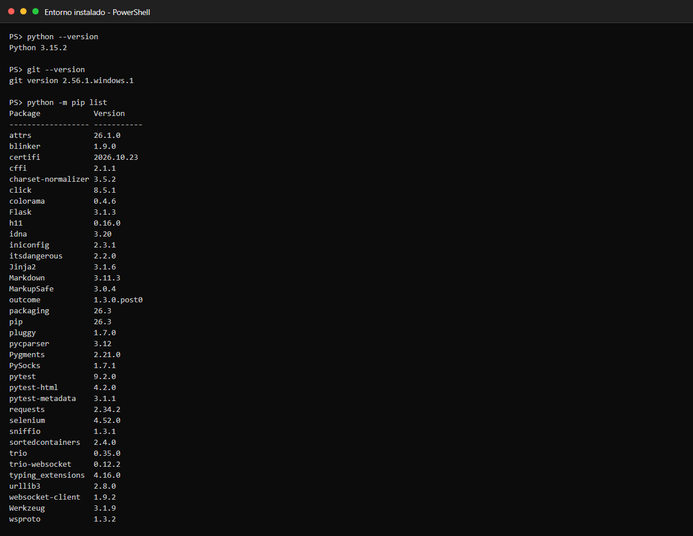
Captura 1. Entorno instalado: versiones de Python y Git y paquetes de la suite.
4.2 Explorar la aplicación a mano
python -m app.servidor # http://127.0.0.1:5000/inscripcion
Se recorrieron el formulario, el listado y la API en el navegador (F12) para
levantar los identificadores (#nombre, #btn-inscribir, #mensaje-exito,
#error-<campo>, #tabla-estudiantes, #total) antes de escribir pruebas.
4.3 Montar el repositorio compartido (Paso 4)
git init
git add .
git commit -m "Proyecto base del taller grupal"
git branch -M main
Se creó un .gitignore que excluye .venv/, __pycache__/ y el material de
la actividad individual: el repositorio se entrega sin el entorno virtual.
4.4 Trabajar por ramas (una por responsabilidad)
git checkout -b api-jhon # rama del responsable de API
# ... tests/test_api_estudiantes.py: API-19 y API-20 (ciclo de vida) ...
git add tests/test_api_estudiantes.py
git commit -m "Pruebas API: ciclo de vida completo y liberacion de correo tras borrado"
git checkout main
git merge --no-ff api-jhon # el líder integra
git checkout -b interfaz-jhon # rama del responsable de interfaz
# ... pages/listado_page.py + WEB-11 ...
git commit -am "Page Object del listado y prueba de consistencia filas/contador"
git checkout main && git merge --no-ff interfaz-jhon
git checkout -b e2e-jhon # flujos entre todos
# ... tests/test_flujo_e2e.py (E2E-01..E2E-06) ...
git commit -am "Flujos E2E: ciclo de vida web<->API, duplicados y reincorporacion"
git checkout main && git merge --no-ff e2e-jhon
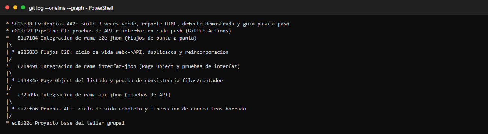
Captura 2. Historial de commits con las tres ramas integradas en main (git log --oneline --graph).
Regla aplicada durante el trabajo: cada quien edita solo sus archivos y
tests/conftest.py no se modifica sin avisar al equipo.
4.5 Pipeline de integración continua (opcional, Paso 6.3)
.github/workflows/pruebas.yml ejecuta -m api y luego -m ui (interfaz +
flujos) en cada push/pull_request y sube reportes/ y evidencias/ como
artefacto. Queda listo para activarse al publicar el repositorio en GitHub
(con captura de la pestaña Actions en verde una vez haya un remoto).
4.6 Ejecutar la suite completa tres veces seguidas (Paso 6.2)
python -m pytest -v # corrida 1
python -m pytest -v # corrida 2
python -m pytest -v --html=reportes/reporte.html --self-contained-html # corrida 3 + reporte
Salidas completas en capturas/04_ejecucion_1_de_3.txt,
capturas/05_ejecucion_2_de_3.txt y capturas/06_ejecucion_3_de_3_con_reporte.txt.
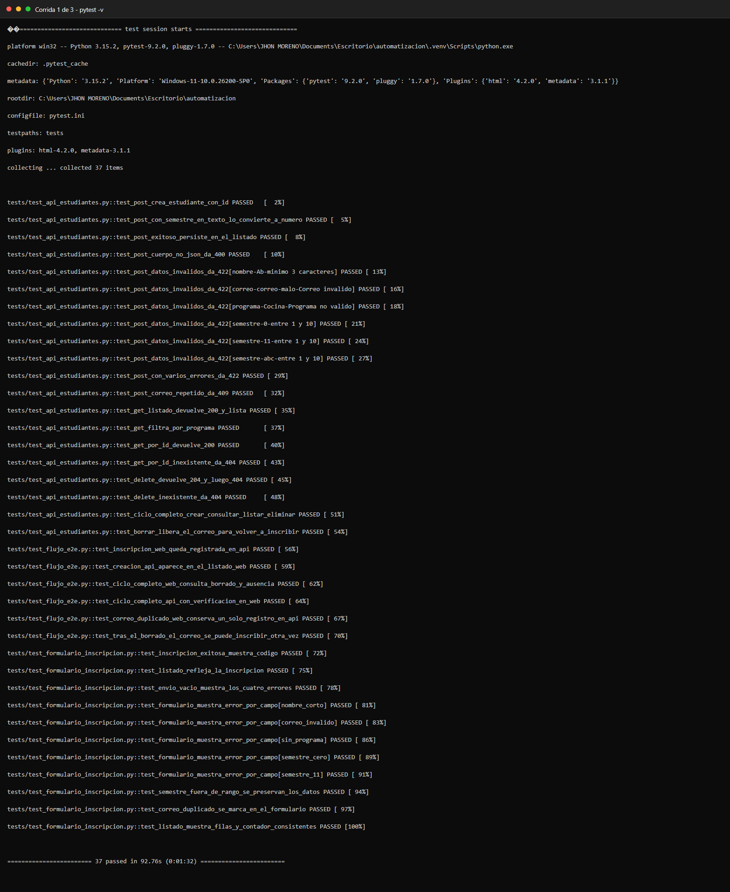
Captura 3. Corrida 1 de 3: suite completa en verde.
Captura 4. Corrida 2 de 3: suite completa en verde.
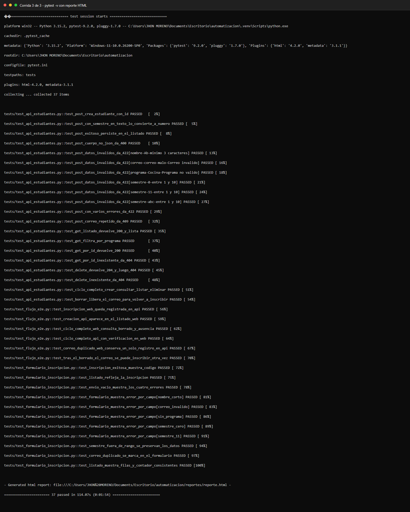
Captura 5. Corrida 3 de 3 con reporte HTML generado.
4.7 Demostración del defecto (prueba de la prueba)
Se introdujo a propósito un defecto en app/servidor.py: el DELETE devolvía
204 sin eliminar el registro.
# (editar app/servidor.py: el DELETE deja de hacer estudiantes.pop(...))
python -m pytest -v -k "delete or ciclo or libera or borrado" # ← falla
git checkout -- app/servidor.py # revertir
python -m pytest -v -k "delete or ciclo or libera or borrado" # ← vuelve a verde
Captura 6. Defecto introducido: 6 pruebas fallan (API y flujos E2E).
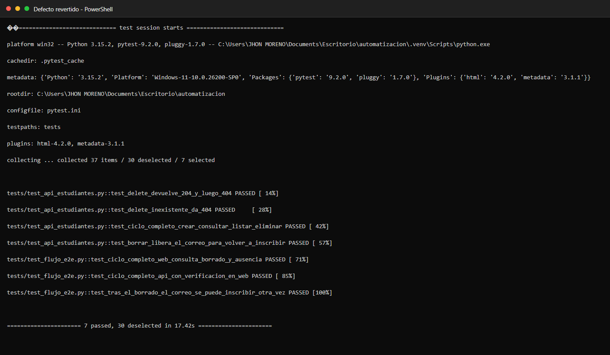
Captura 7. Defecto revertido: las mismas pruebas vuelven a pasar.
4.8 Recolectar evidencias (Paso 7)
| Evidencia | Dónde está |
|---|---|
| Código | Este repositorio (sin .venv; exportable con git archive) |
| Ejecución en verde (3 veces) | capturas/04…06_ejecucion_*.txt + .png |
| Reporte HTML | reportes/reporte.html (autocontenido) |
| Capturas del navegador | evidencias/ (fixture evidencia(...), incluye los 6 flujos E2E) |
| Defecto detectado | capturas/07_defecto_introducido.txt y capturas/08_defecto_revertido.txt |
| Trabajo colaborativo | capturas/09_historial_git.txt (historial con ramas y merges) |
| Demostración en vivo | capturas/demo_01…demo_05.jpg (flujo E2E-03 ejecutado a mano, sección 4.10) |
| Pipeline | .github/workflows/pruebas.yml |
4.9 Generar este documento en HTML
python tools/md_a_html.py GUIA_AA2.md GUIA_AA2.html
4.10 Demostración en vivo del flujo E2E-03 (capturas del navegador)
El mismo flujo que automatiza test_ciclo_completo_web_consulta_borrado_y_ausencia
se ejecutó a mano en el navegador contra el servidor corriendo en
http://127.0.0.1:5000, dejando captura de cada etapa:
① Inscribir por el formulario → mensaje de éxito con el código
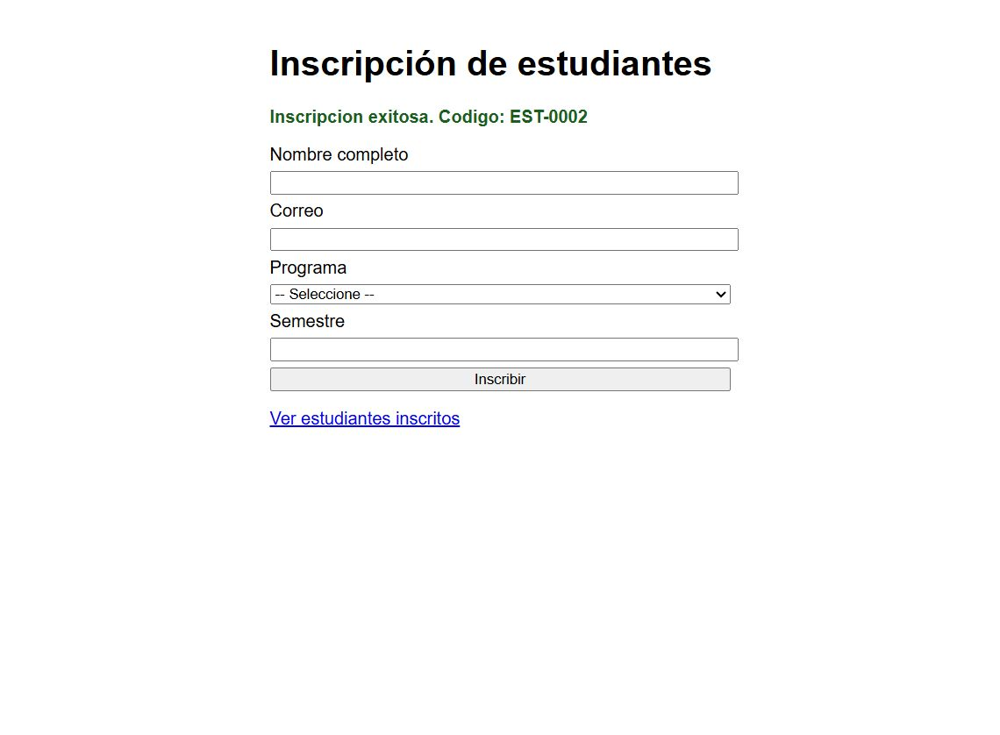
Demo 1. Formulario enviado: "Inscripcion exitosa. Codigo: EST-0002".
② Verificar en la API que el dato quedó guardado
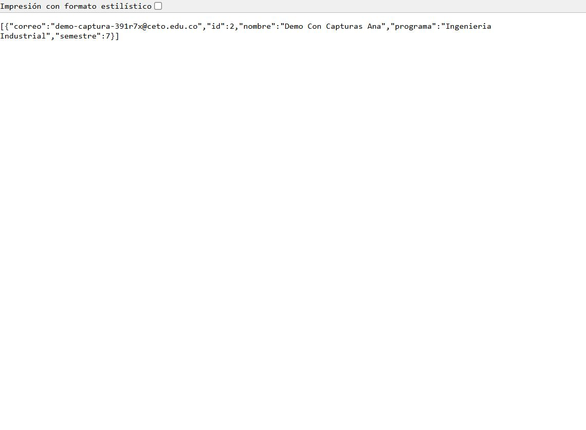
Demo 2. GET /api/estudiantes devuelve el registro id: 2 con nombre, correo, programa y semestre idénticos a los del formulario.
③ Confirmar la fila en el listado web (antes de borrar)
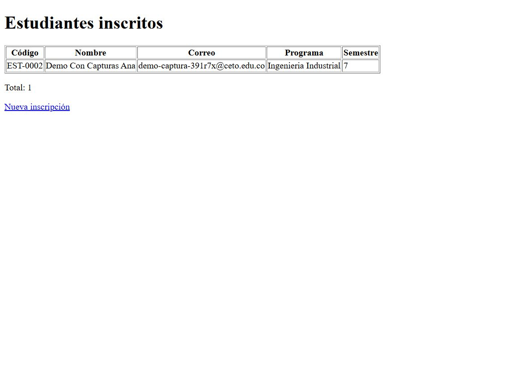
Demo 3. Listado /estudiantes: fila EST-0002 y Total: 1.
④ Eliminar por la API y comprobar el 404
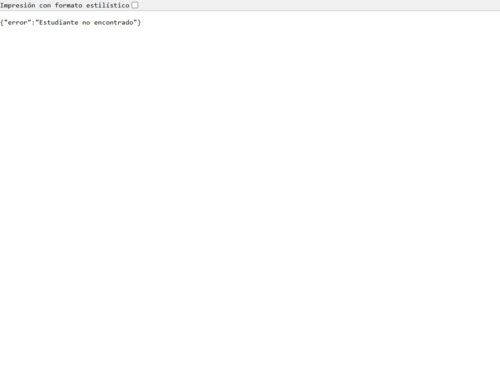
Demo 4. DELETE → 204 y después GET /api/estudiantes/2 → {"error":"Estudiante no encontrado"}.
⑤ Verificar en la web que el registro ya no existe
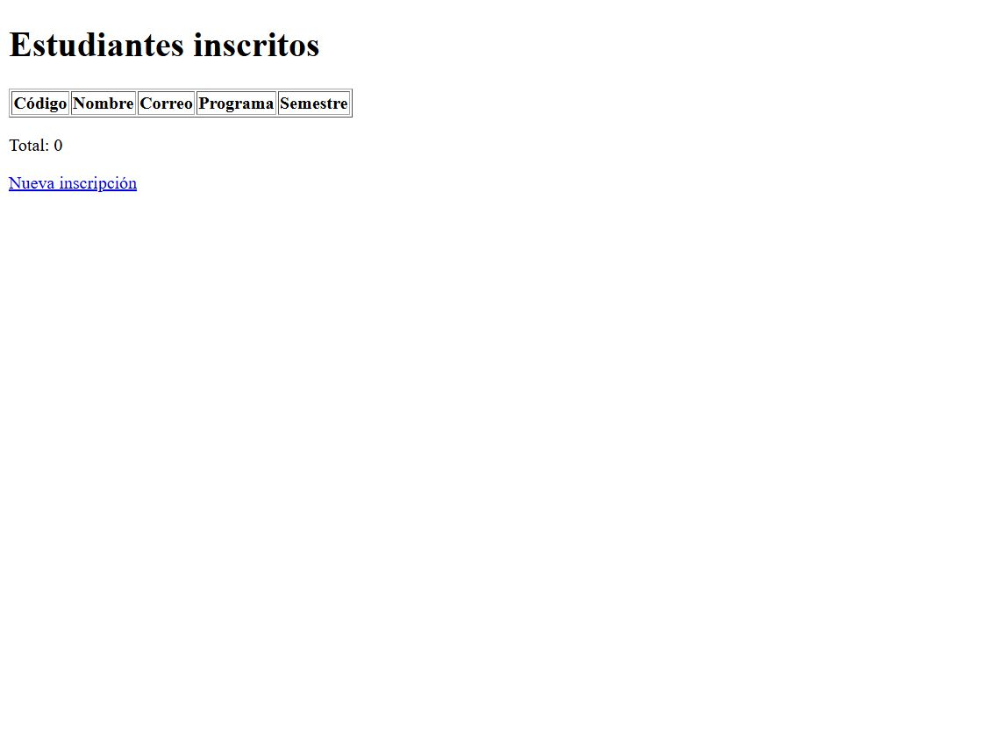
Demo 5. Listado recargado: tabla sin filas y Total: 0 — la ausencia confirmada en la capa web.
| Etapa del flujo | Captura |
|---|---|
| Crear (web) | capturas/demo_01_formulario_exito.jpg |
| Consultar (API) | capturas/demo_02_api_con_registro.jpg |
| Listar (web) | capturas/demo_03_listado_antes_de_borrar.jpg |
| Eliminar (API) | capturas/demo_04_api_404_tras_borrar.jpg |
| Verificar ausencia (ambas capas) | capturas/demo_05_listado_tras_borrar.jpg |
5. Los scripts explicados
5.1 Fixtures compartidas (tests/conftest.py, intocable)
base_url levanta la app en un hilo y un puerto libre una vez por sesión;
api_url deriva de ella; driver abre Chrome headless y siempre cierra con
quit(); evidencia('nombre') guarda PNG en evidencias/ y el hook
pytest_runtest_makereport captura automáticamente la pantalla si una prueba
falla. Ninguna prueba necesita tener el servidor abierto a mano.
5.2 Page Objects: uno por página, compartido por todos
pages/inscripcion_page.py (formulario) centraliza localizadores y acciones;
pages/listado_page.py (listado) hace lo propio con la tabla. Las pruebas solo
dicen qué verificar; los Page Objects informan cómo se maneja el HTML,
y nunca contienen assert.
Lo más importante para el Foco 1 es la espera del borrado: el navegador debe
recargar /estudiantes y solo entonces comprobar que la fila desapareció —
nunca una lectura al azar ni un sleep:
def esperar_que_no_haya_fila_con(self, texto, tiempo=8):
"""Espera a que desaparezca toda fila que mencione el texto."""
WebDriverWait(self.driver, tiempo).until(
lambda d: not any(texto in f.text for f in d.find_elements(*self.FILAS))
)
return self
5.3 Pruebas de la API: Arrange → Act → Assert con limpieza
El caso bandera de la capa API recorre el ciclo de vida completo en una sola prueba y verifica el efecto de cada paso (incluida la ausencia tras el borrado):
def test_ciclo_completo_crear_consultar_listar_eliminar(api_url):
"""Foco 1: crear -> consultar -> listar -> eliminar -> verificar ausencia."""
creada = crear(api_url, nombre="Ciclo De Vida Prueba")
assert creada.status_code == 201
id_est = creada.json()["id"]
detalle = requests.get(f"{api_url}/{id_est}", timeout=10)
assert detalle.status_code == 200
assert detalle.json() == creada.json(), "la consulta debe ser consistente con la creacion"
assert any(e["id"] == id_est for e in requests.get(api_url, timeout=10).json())
assert requests.delete(f"{api_url}/{id_est}", timeout=10).status_code == 204
assert requests.get(f"{api_url}/{id_est}", timeout=10).status_code == 404
assert not any(e["id"] == id_est for e in requests.get(api_url, timeout=10).json())
Cada prueba crea sus datos con uuid y limpia con borrar_si_existe(): la
suite puede correr en cualquier orden sin ensuciarse.
5.4 Flujos de punta a punta (tests/test_flujo_e2e.py)
El ejemplo resumen del equipo — la inscripción hecha en el navegador debe existir en la API con los mismos valores:
def test_inscripcion_web_queda_registrada_en_api(driver, base_url, api_url, evidencia):
"""E2E-01: inscribo por el FORMULARIO -> lo encuentro en la API."""
correo = correo_unico()
_, mensaje = inscribir_por_web(
driver, base_url,
nombre="Sofia Mejia Rojas", correo=correo,
programa="Ingenieria Industrial", semestre=7,
evidencia=evidencia, paso="01_formulario_enviado",
)
assert "Inscripcion exitosa" in mensaje, "el formulario debe reportar exito"
registro = buscar_por_correo(api_url, correo)
assert registro is not None, "La inscripcion web no aparece en la API"
assert registro["nombre"] == "Sofia Mejia Rojas"
assert registro["programa"] == "Ingenieria Industrial"
assert registro["semestre"] == 7, "el semestre debe persistir igual en la API"
borrar_si_existe(api_url, registro["id"])
Y el caso bandera E2E-03, que encadena las cuatro etapas del foco 1 cruzando
capas (el código EST-XXXX del formulario se convierte en el id que consulta y
borra la API, y la web confirma la ausencia):
# 1) Crear por el formulario y capturar el codigo EST-XXXX del exito
_, mensaje = inscribir_por_web(driver, base_url, nombre="Camilo Andres Vera",
correo=correo, programa="Ingenieria de Sistemas",
semestre=9, evidencia=evidencia, paso="03_exito_web")
id_est = int(re.search(r"EST-(\d+)", mensaje).group(1))
# 2) Consultar por la API con el id derivado del codigo
detalle = requests.get(f"{api_url}/{id_est}", timeout=10)
assert detalle.status_code == 200
assert detalle.json()["correo"] == correo
# 3) Listar en la web: el registro aparece en la tabla
listado = PaginaListado(driver, base_url).abrir().esperar_fila_con(correo)
assert f"EST-{id_est:04d}" in listado.codigos()
# 4) Eliminar por la API
assert requests.delete(f"{api_url}/{id_est}", timeout=10).status_code == 204
# 5) Verificar la ausencia en AMBAS capas
assert requests.get(f"{api_url}/{id_est}", timeout=10).status_code == 404
assert buscar_por_correo(api_url, correo) is None
listado_final = PaginaListado(driver, base_url).abrir()
listado_final.esperar_que_no_haya_fila_con(correo)
assert not listado_final.contiene(correo)
Por qué importa: una prueba de formulario aislada solo comprueba que aparece un mensaje; un flujo de punta a punta comprueba que el dato realmente quedó guardado, es consultable, se lista y, al borrarlo, desaparece en todas las capas. Esa es la diferencia entre "la pantalla dice éxito" y "el sistema funciona".
5.5 Datos de prueba externos (data/casos_formulario.csv)
Los casos de error de la interfaz no están en el código: son filas del CSV.
Agregar un caso es agregar una fila, sin tocar ningún script, y aparece en
el reporte como test_formulario_muestra_error_por_campo[semestre_11].
6. Resultados
6.1 Suite completa — 3 ejecuciones consecutivas
| Corrida | Comando | Aprobadas | Fallidas | Duración | Evidencia |
|---|---|---|---|---|---|
| 1 | python -m pytest -v |
37 | 0 | 92.76 s | capturas/04_ejecucion_1_de_3.txt + .png |
| 2 | python -m pytest -v |
37 | 0 | 91.37 s | capturas/05_ejecucion_2_de_3.txt + .png |
| 3 | python -m pytest -v --html=… |
37 | 0 | 114.07 s | capturas/06_ejecucion_3_de_3_con_reporte.txt + .png |
6.2 Resumen por capa
| Capa | Marca | Pruebas | Resultado |
|---|---|---|---|
| API REST | api |
20 | 20 aprobadas |
| Interfaz (formulario + listado) | ui (sin E2E) |
11 | 11 aprobadas |
| Flujos punta a punta | e2e (+ui) |
6 | 6 aprobadas |
| Total | 37 | 37 aprobadas · 0 fallidas (3/3 corridas) |
Reporte HTML: reportes/reporte.html (autocontenido, se abre en cualquier
navegador).
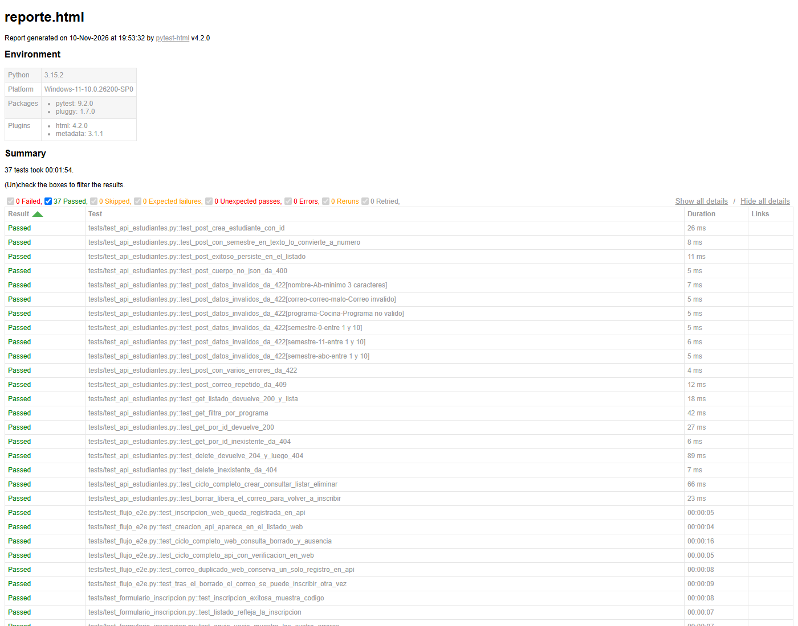
Captura 8. Reporte HTML de pytest con las 37 pruebas en verde.
Capturas del navegador en evidencias/, por ejemplo:
test_ciclo_completo_web_consulta_borrado_y_ausencia__04_listado_antes_de_borrar.png
y …__05_listado_tras_borrar.png (el antes y el después del borrado),
test_correo_duplicado_web_conserva_un_solo_registro_en_api__08_error_duplicado_web.png
y test_tras_el_borrado_el_correo_se_puede_inscribir_otra_vez__09_reinscripcion_tras_borrado.png.
6.3 Prueba de la prueba (defecto introducido)
| Escenario | Resultado | Evidencia |
|---|---|---|
Defecto: DELETE responde 204 sin eliminar |
6 fallidas, 1 aprobada (API-17, API-19, API-20, E2E-03, E2E-04, E2E-06) | capturas/07_defecto_introducido.txt + .png |
| Defecto presente, ejecutando solo las pruebas de formulario | 11 aprobadas, 0 fallidas — la capa de interfaz no lo detecta | capturas/10_defecto_solo_lo_detectan_api_y_e2e.txt + .png |
Defecto revertido (git checkout -- app/servidor.py) |
7 aprobadas, 0 fallidas (mismo filtro que la primera fila) | capturas/08_defecto_revertido.txt + .png |
7. Hallazgos
7.1 Defecto real detectado por la suite (evidencia obligatoria)
Defecto: DELETE /api/estudiantes/<id> devolvía 204 Not Found pero no
eliminaba el registro (se comparaba el id sin sacarlo del diccionario).
Cómo se detectó: con el defecto presente, 6 pruebas cayeron: las de la
API verificaban el 404 posterior y la liberación del correo; los flujos E2E
detectaron además el efecto visible: el estudiante seguía apareciendo en el
listado web después de "borrarlo". Se revirtió el cambio y la suite volvió a
verde. Salidas completas en capturas/07_defecto_introducido.txt y
capturas/08_defecto_revertido.txt.
Lección de equipo: el defecto lo detectaron las capas API y E2E, jamás
las pruebas de formulario: ejecutando solo tests/test_formulario_inscripcion.py
con el defecto puesto, las 11 pruebas pasaron igual
(capturas/10_defecto_solo_lo_detectan_api_y_e2e.txt) porque el formulario
nunca borra. Cada capa aporta una red distinta y solo cruzándolas se ve el
efecto completo (ver reflexión, pregunta 1).
7.2 Sincronización con el navegador: dos errores propios corregidos
- Leer la API antes de tiempo (condición de carrera). En un primer borrador
de E2E-06 se consultaba la API justo después del clic en Inscribir; como el
POST tarda ~0,5 s, la lectura podía llegar antes de que el servidor
guardara y la prueba fallaba de forma intermitente. Corrección: siempre
esperar el mensaje de éxito en el navegador (
esperar_mensaje_exito()) antes de verificar por API — la señal de que el POST terminó. - Mensaje perdido por recargar la página. Al crear una segunda instancia de
PaginaInscripcion(que navega en el constructor) justo después del primer envío, se perdía el#mensaje-exito. Corrección: reutilizar la misma instancia para esperar el resultado y solo después abrir una página nueva.
Con esas dos reglas, la suite completa pasó 3 de 3 corridas consecutivas sin
ninguna prueba intermitente. Como referencia de curso, el taller documenta
también el caso clásico Node with given id does not belong to the document:
se resuelve indicando a la espera que tolere ese error transitorio con
WebDriverWait(..., ignored_exceptions=(WebDriverException,)) — patrón a
aplicar si algún día aparece un error de nodo obsoleto en nuestras esperas.
7.3 Datos aislados entre pruebas
Cada prueba usa correos únicos con uuid y limpia lo que crea. Sin eso, las
pruebas de duplicados (API-12, WEB-10, E2E-05) se contaminarían entre sí y
dependerían del orden de ejecución.
8. Reflexión grupal
Reflexión del integrante que asumió los cuatro roles del equipo.
1. ¿Qué aportó cada capa de pruebas (API, formulario, punta a punta)? ¿Hubo algún error que solo detectó una de ellas?
La API da velocidad y precisión: 20 casos en ~2 s que verifican códigos de
estado, contratos y límites. El formulario valida lo que el usuario realmente
ve: mensajes por campo, preservación de datos y navegación al listado. Los
flujos punta a punta son los únicos que responden "¿el dato quedó
guardado?" en lugar de "¿la pantalla dijo éxito?". El defecto demostrado lo
detectaron solo API y E2E —nunca las pruebas puras de formulario—, y los E2E
fueron los que añadieron la consecuencia visible (la fila seguía en el
listado tras el borrado). También lo detectaron que solo una capa: WEB-11
(filas vs. #total) solo mira la interfaz, y API-04 (cuerpo no JSON) solo
existe en la capa de servicio.
2. ¿Qué dificultades tuvieron al integrar el trabajo de varias personas en un mismo proyecto? ¿Cómo las resolvieron?
Aunque trabajé como equipo reducido, la disciplina de integración fue la misma
que pide el documento: una rama por responsabilidad (api-jhon,
interfaz-jhon, e2e-jhon), archivos con dueño claro y conftest.py
intocable. La dificultad real fue la dependencia cruzada: los flujos E2E
necesitaban el Page Object del listado, que aún no existía en su rama. Se resolvió
integrando en orden (api → interfaz → e2e) con --no-ff para que el
historial muestre qué aportó cada rama y el main siempre quedara ejecutable.
3. ¿Encontraron pruebas intermitentes? ¿Qué aprendieron sobre la sincronización con el navegador?
Sí, en el desarrollo: la lectura de la API tras el clic (carrera de 0,5 s) y la
pérdida del mensaje al recargar la página hicieron fallar pruebas unas veces y
otras no. Ambas se corrigieron con esperas explícitas sobre señales
semánticas (mensaje de éxito, fila presente/ausente) en lugar de tiempos
fijos: nunca time.sleep. Aprendizaje clave: la espera correcta es esperar
por el estado que la prueba necesita comprobar, no por una cantidad de tiempo.
Resultado: 3 corridas consecutivas sin un solo flake.
4. Si este módulo pasara a producción, ¿qué pruebas ejecutarían en cada cambio y cuáles solo antes de publicar?
En cada cambio (minutos): las 20 de API y los 6 flujos E2E — son las que
verifican el contrato y la integridad entre capas; corren ~50 s y son las que
más regresiones cuestan en producción. Antes de publicar (pase completo): las 11
de interfaz con capturas y el reporte HTML, más la exploración manual de
usabilidad. El pipeline .github/workflows/pruebas.yml ya ejecuta exactamente
esa secuencia en cada push.
5. ¿Qué harían diferente si empezaran de nuevo?
Escribir los flujos E2E primero que las pruebas unitarias de capa: al
definir temprano "crear web → verificar API → borrar → verificar ausencia" se
habrían descubierto antes los huecos (por ejemplo, que hace falta un Page Object
para el listado) y se habría diseñado el conftest con ese flujo en mente.
También: generar las capturas y el historial de git durante el trabajo, no al
final, y dejar el defecto de demostración anotado en el plan desde el día 1.
9. Aportes individuales
| Integrante | Rol | Aportes concretos (archivos y pruebas) |
|---|---|---|
| Jhon Alexis Moreno | Líder / integrador | git init, .gitignore, estructura del repo, ramas e integraciones con --no-ff, pytest.ini con las marcas api/ui/e2e, .github/workflows/pruebas.yml (pipeline), ejecución y estabilización de la suite 3 veces |
| Jhon Alexis Moreno | Responsable de API | tests/test_api_estudiantes.py: 18 pruebas heredadas de AA1 + API-19 (ciclo de vida completo) y API-20 (borrado libera el correo) → 20 pruebas |
| Jhon Alexis Moreno | Responsable de interfaz | pages/inscripcion_page.py (Page Object del formulario), pages/listado_page.py (Page Object del listado, nuevo), WEB-11 (filas vs. contador) → 11 pruebas de interfaz |
| Jhon Alexis Moreno | Evidencias y documentación | tests/test_flujo_e2e.py (E2E-01…E2E-06), demostración del defecto (capturas/07…08), reporte reportes/reporte.html, capturas de navegador en evidencias/, historial capturas/09_historial_git.*, esta guía (GUIA_AA2.md + GUIA_AA2.html) y la reflexión |
El reparto respeta la regla del taller: todos escriben pruebas (cada rol aportó pruebas) y la matriz de la sección 3 registra el responsable de cada caso.
Lista de verificación AA2
- [x] El plan de pruebas tiene matriz de casos con responsables (37 casos, sección 3.2).
- [x] Hay al menos 3 flujos de punta a punta que cruzan la API y la interfaz (6, sección 3.3).
- [x] Hay un solo Page Object por página, reutilizado por todo el equipo (
inscripcion_page.py,listado_page.py). - [x] La suite completa pasa 3 veces seguidas (sección 6.1).
- [x] Hay evidencias de código, capturas, reporte, defecto detectado y trabajo colaborativo (sección 4.8).
- [x] La guía paso a paso es reproducible por otro equipo (sección 4).
- [x] Están la reflexión grupal y la tabla de aportes individuales (secciones 8 y 9).